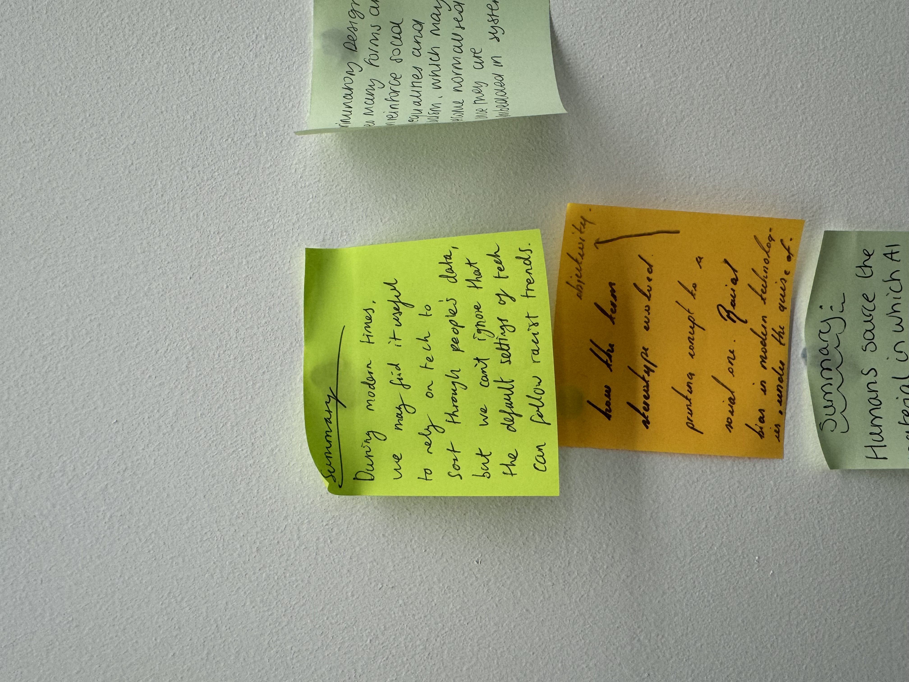
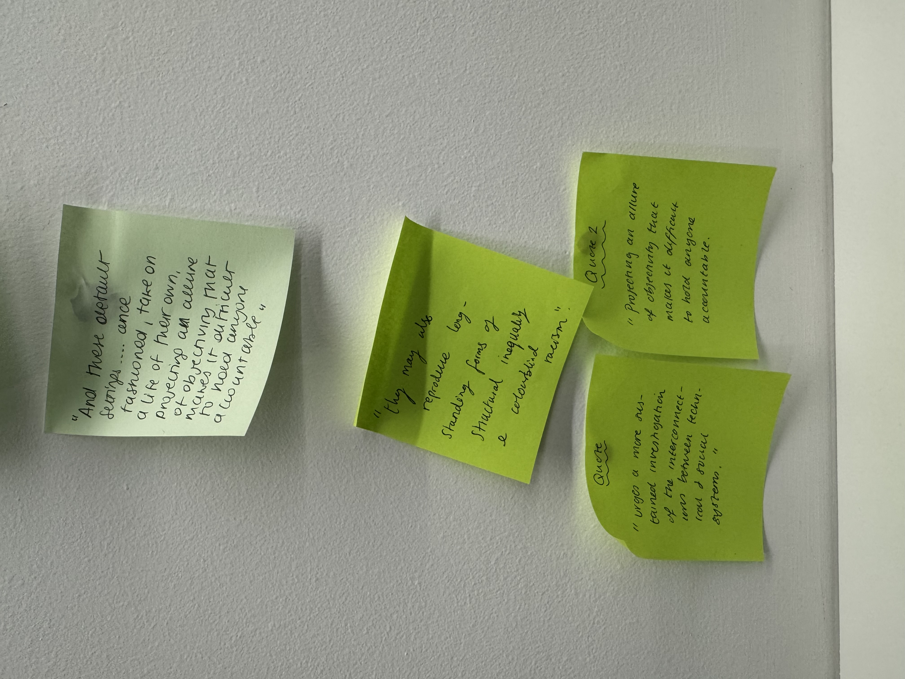
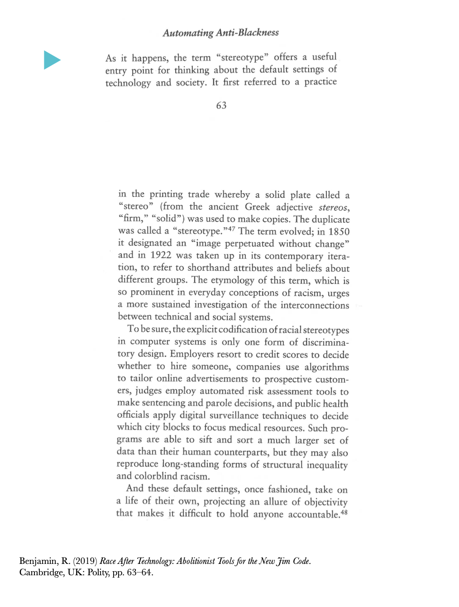

Are Robots Racist?
This week we analysed an extract from Ruha Benjamin, exploring whether the technologies we rely on in modern life carry an underlying level of racism — not necessarily by design, but as a consequence of the assumptions baked into their default settings.
Key Takeaways
Despite the advantage that tech programs have in sorting through large volumes of data efficiently, Benjamin argues they are limited in a significant way — that in processing this data, they can reproduce and amplify existing social inequalities rather than neutralise them.
"they may also reproduce long-standing forms of structural inequality and colourblind racism"
The core argument is that during modern times, whilst it may feel useful and even progressive to rely on technology to sort through people's data objectively, we can't ignore that the default settings of these systems can follow racist trends. As Benjamin puts it, technology risks reproducing longstanding forms of structural inequality under the guise of being colourblind.
This idea of being "colourblind" is particularly striking — the suggestion that a system treating everyone identically is neutral or fair, when in reality it may be blind to the structural disadvantages that already exist. Neutrality, in this framing, isn't the absence of bias; it can be its continuation.
Visual Responses


